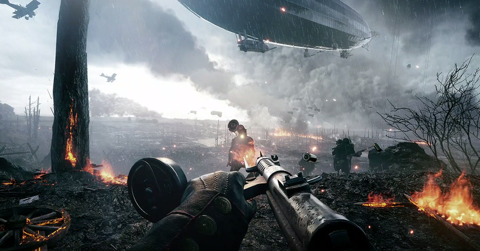

Video games have become an important thing to have short time fun with friends and family. Video games are simulations that are controlled by certain characters. The controls of the character are with the user. These video games are made with extensive animations that help create a real life situations. Lets look them how these video games are made and what's the AI used in it...

A video game or computer game is an electronic game that involves interaction with a user interface or input device – such as a joystick, controller, keyboard, or motion sensing device – to generate visual feedback. This feedback is shown on a video display device, such as a TV set, monitor, touchscreen, or virtual reality headset. Video games are often augmented with audio feedback delivered through speakers or headphones, and sometimes with other types of feedback, including haptic technology. In video games, artificial intelligence (AI) is used to generate responsive, adaptive or intelligent behaviors primarily in non-player characters (NPCs) similar to human-like intelligence. .
The history of video games began in the 1950s and 1960s as computer scientists began designing simple games and simulations on mainframe computers, with MIT's Spacewar! in 1962 as one of the first such games to be played with a video display. By the mid-1970s, low-cost programmable microprocessors replaced the discrete transistor–transistor logic circuitry of the early hardware, and the first ROM cartridge-based home consoles arrived, including the Atari Video Computer System (VCS). Coupled with rapid growth in a golden age of arcade video games with titles such as Space Invaders and Pac-Man, the home console market also flourished.
Nintendo released its Nintendo Entertainment System in the United States and other Western markets in 1985, helping to rebound the failing video games sector. The latter part of the 1980s and early 1990s saw video games driven by improvements and standardization in personal computers, and the console war competition between Nintendo and Sega as they fought for market share in the United States. The first major handheld video game consoles appeared in the 1990s, led by Nintendo's Game Boy platform.
The Game Boy is an 8-bit handheld game console developed and manufactured by Nintendo. The first handheld in the Game Boy family, it was first released in Japan on April 21, 1989, then North America, three months later, and lastly in Europe, more than one year later. Nintendo's second handheld game console, the Game Boy, combines features from both the NES home system and Game & Watch hardware. The console features a dull green dot-matrix screen with adjustable contrast dial, five control buttons (a directional pad, two game buttons, and "START" and "SELECT"), a single speaker with adjustable volume dial, and, like its rivals, uses cartridges as physical media for games. The color scheme is made from two tones of grey with accents of black, blue, and dark magenta.
The early 1990s saw two major shifts in technology, the introduction of optical media via CD-ROMs, and the ability to perform real-time polygonal 3D graphic rendering from further advancements in computer microprocessors. Both aspects were readily incorporated into personal computers and creating a market for graphics cards, while Sony used both in its fledgling PlayStation console line, pushing Sega out of the console hardware market while diminishing Nintendo's role.
By the late 1990s, the Internet also gained widespread consumer use, and video games began incorporating online elements. Microsoft entered the console hardware market in the early 2000s with its Xbox line, fearing that Sony's PlayStation positioned as both a game console and entertainment device would displace personal computers. From the 2000s and into the 2010s, the industry has seen a shift of demographics as mobile gaming on smartphones and tablets displaced handheld consoles, and casual gaming had become an increasing larger sector of the market, as well as a growth in the number of players from China and other areas not traditionally tied to the industry.
In video games, artificial intelligence (AI) is used to generate responsive, adaptive or intelligent behaviors primarily in non-player characters (NPCs) similar to human-like intelligence. Artificial intelligence has been an integral part of video games since their inception in the 1950s. AI in video games is a distinct subfield and differs from academic AI. It serves to improve the game-player experience rather than machine learning or decision making. The term "game AI" is used to refer to a broad set of algorithms that also include techniques from control theory, robotics, computer graphics and computer science in general, and so video game AI may often not constitute "true AI" in that such techniques do not necessarily facilitate computer learning or other standard criteria, only constituting "automated computation" or a predetermined and limited set of responses to a predetermined and limited set of inputs.
Many industries and corporate voices claim that so-called video game AI has come a long way in the sense that it has revolutionized the way humans interact with all forms of technology, although many expert researchers are skeptical of such claims, and particularly of the notion that such technologies fit the definition of "intelligence" standardly used in the cognitive sciences. Industry voices make the argument that AI has become more versatile in the way we use all technological devices for more than their intended purpose because the AI allows the technology to operate in multiple ways, allegedly developing their own personalities and carrying out complex instructions of the user. At the end, we AI revolutionarizing the gaming industry and making it more real life like.